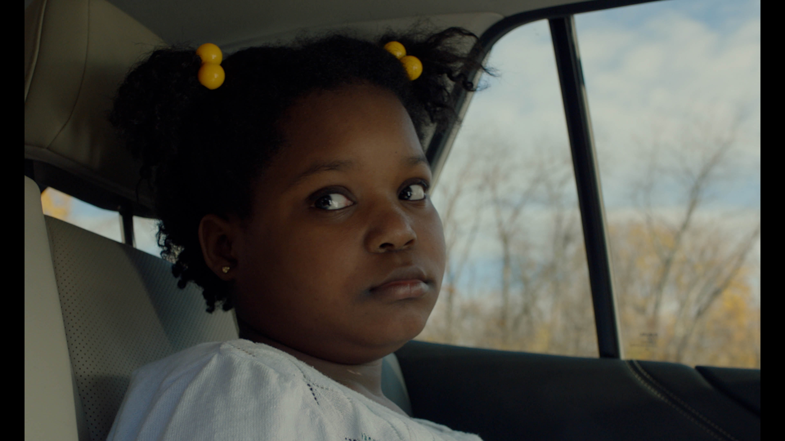
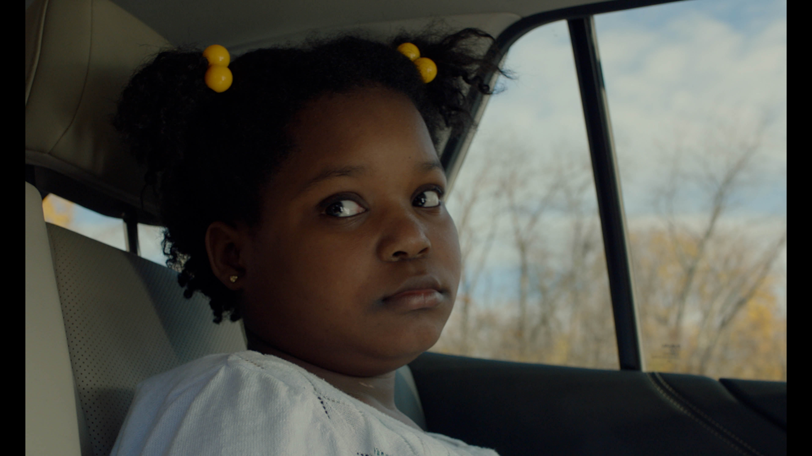

Imaging & Color Science
I have gained an extensive understanding of the theory behind digital and analog imaging science. This includes the principles of geometric and photographic optics, photometry, sensitometry, colorimetry, and image processing. I have gained experience in the operation of various cinema cameras (Arri, Canon, Blackmagic) as well as loading 16mm film.
As a certified user of DaVinci Resolve's Color Grading Software, I have gained a strong understanding of color management and the overall color pipleine. With expereince conforming timelines, balance clips, and preforming complex grades, this knowledge has aided me in the navigation of the visual effects color pipeline.
ArriCam LT, 35mm film, 'Points of Fire, The Lake They Stain'
 

Graded using DaVinci Resolve, 'Say 'I Love You''